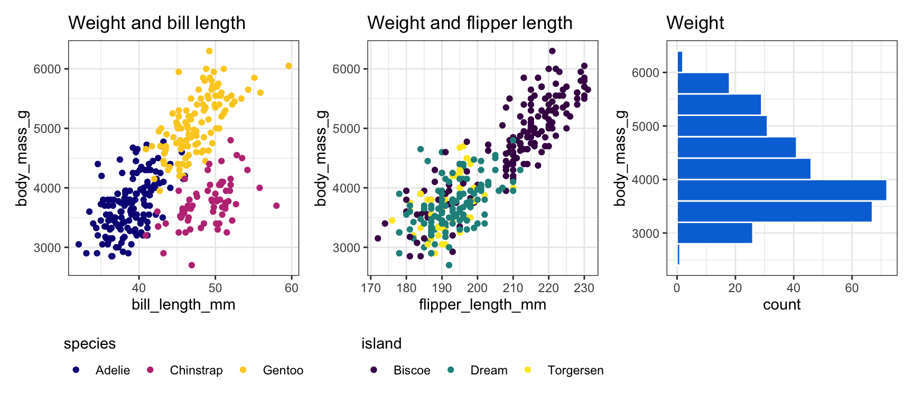

library(tidyverse)
library(palmerpenguins)
library(patchwork)
penguins <- penguins |> drop_na(sex)
plot1 <- ggplot(
penguins,
aes(x = bill_length_mm, y = body_mass_g, color = species)
) +
geom_point() +
scale_colour_viridis_d(option = "plasma", end = 0.9) +
labs(title = "Weight and bill length") +
theme_bw() +
theme(legend.position = "bottom", legend.title.position = "top")
plot2 <- ggplot(
penguins,
aes(x = flipper_length_mm, y = body_mass_g, color = island)
) +
geom_point() +
scale_color_viridis_d(option = "viridis") +
labs(title = "Weight and flipper length") +
theme_bw() +
theme(legend.position = "bottom", legend.title.position = "top")
plot3 <- ggplot(
penguins,
aes(y = body_mass_g)
) +
geom_histogram(bins = 10, fill = "#0074D9", color = "white", boundary = 0) +
labs(title = "Weight") +
theme_bw()
plot1 | plot2 | plot3